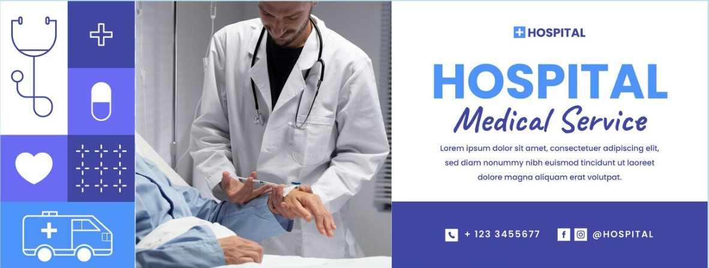

Página Principal
Sobre a clínica
Horário de Atendimento
Contato

Quem Somos
Somos uma clínica especializada em imagem com mais de 30 anos atendendo nossos clientes com amor e carinho.
Localizada no centro de Joinville, oferecemos todo tipo de exames e diagnóstico em imagem.